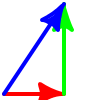

Drawing and Filling
| (require metapict/pict) | package: base |
1 Drawing and Filling
A curve represents the path of a curve. Use draw and fill to create a picture in the form of a pict. Given a single curve draw will use the current pen to stroke the path and fill will use the current brush to fill it.
The size of the pict created by draw and fill functions is determined by the parameters curve-pict-width and curve-pict-height.
The position of points, curves etc. are given in logical coordinates. A pict will only draw the section of the coordinate plane that is given by the parameter curve-pict-window. This parameter holds the logical window (an x- and y-range) that will be drawn.
procedure
(draw d ...) → pict?
d : drawable?
Given no arguments a blank pict will be returned.
Given multiple arguments draw will convert each argument into a pict, then layer the results using cc-superimpose. In other words: it draw the arguments in order, starting with the first.

> (draw (curve (pt -1 0) .. (pt 0 1) .. (pt 1 0)) (pt 0 0) (bez (pt -1/2 0) (pt -1/2 1) (pt 1/2 1) (pt 1/2 0)) (label-bot "Origo" (pt 0 0)))

procedure
(fill c ...) → pict?
c : curve?
A curve divides the points of the plane in two: the inside and the outside. The inside is drawn with the brush and the outside is left untouched.
For a simple non-intersecting curve it is simple to decide whether a point is on the inside or outside. For self-intersecting curves the so-called winding rule is used. The winding rule is also used when filling multiple curves
Given a point P consider a ray from P towards infinity. For each intersection between the ray and the curve(s), determine whether the curve crosses right-to-left or left-to-right. Each right-to-left crossing counts as +1 and each left-to-right crossing as -1. If the total sum of the counts are non-zero, then then point will be filled.
> (beside (fill c1) (fill r1))

> (beside (fill c1 c3) (fill c1 r3) (fill r1 c3) (fill r1 r3))

For (fill c1 c3) the winding numbers are -1+1=0 and +1. Therefore the points inside c3 are not filled.
> (beside (fill c2 r3 c4) (fill r2 c3 r4)) 
> (beside (fill c1 r2 c3 r4) (fill r1 c2 r3 c4))